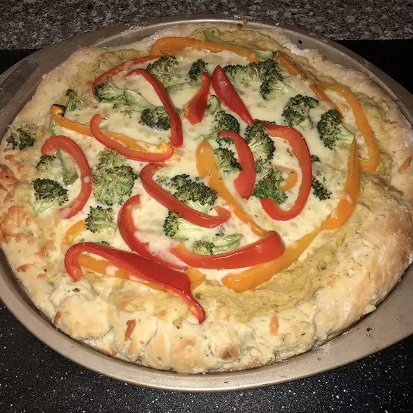

Hummus Pizza

Bon Voyage!
Who doesn't love mac-n-cheese! Using this simple and easy to do recipe, you too can have a family classic for everyone to enjoy.
I picked a recipe that includes cauliflower because it pairs extremely well with the traditional mac, as well as being a healthy food to eat.
This recipe is also super simple to follow and can be scaled to make more or less depending on your needs.
- 1 (10 ounce) can refrigerated pizza crust dough
- 1 cup hummus spread
- 1 ½ cups sliced bell peppers, any color
- 1 cup broccoli florets
- 2 cups shredded Monterey Jack cheese
- Step 1
Preheat the oven to 475 degrees C (220 degrees C).
- Step 2
Roll out pizza crust and place on a pizza pan or baking sheet. Spread a thin layer of hummus over the crust. Arrange sliced peppers and broccoli over the hummus, and top with shredded cheese.
- Step 3
Bake in the preheated oven until the crust is golden brown and cheese is melted in the center, 10 to 15 minutes. Slice and serve.